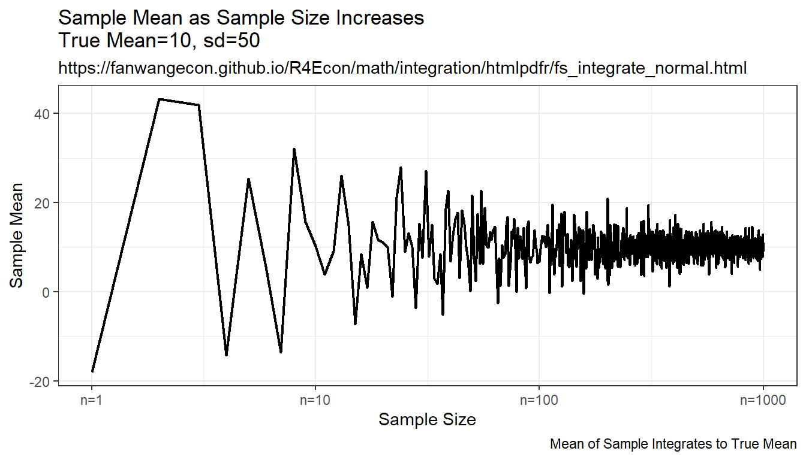
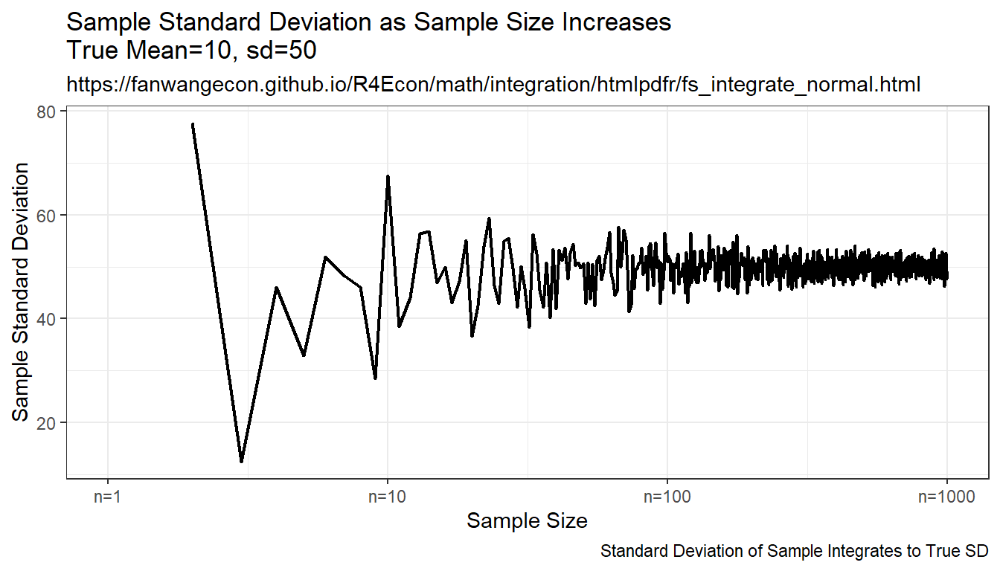
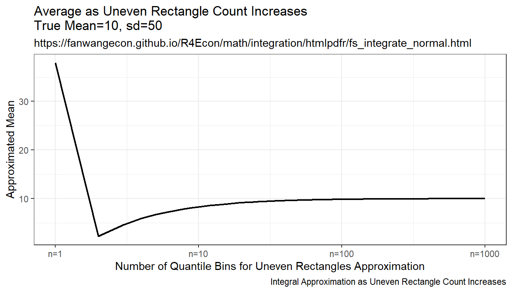
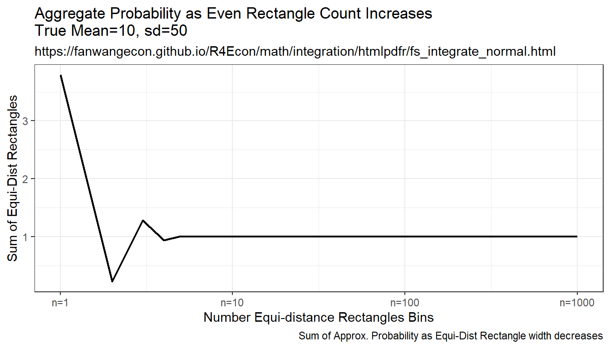

Chapter 8 Mathmatics and Statistics
8.1 Distributions
8.1.1 Integrate Over Normal Guassian Process Shock
Go back to fan’s REconTools Package, R Code Examples Repository (bookdown site), or Intro Stats with R Repository (bookdown site).
Some Common parameters
fl_eps_mean = 10
fl_eps_sd = 50
fl_cdf_min = 0.000001
fl_cdf_max = 0.999999
ar_it_draws <- seq(1, 1000)8.1.1.1 Randomly Sample and Integrate (Monte Carlo Integration)
Compare randomly drawn normal shock mean and known mean. How does simulated mean change with draws. Actual integral equals to \(10\), as sample size increases, the sample mean approaches the integration results, but this is expensive, even with ten thousand draws, not very exact.
# Simulate Draws
set.seed(123)
ar_fl_means <-
sapply(ar_it_draws, function(x)
return(mean(rnorm(x[1], mean=fl_eps_mean, sd=fl_eps_sd))))
ar_fl_sd <-
sapply(ar_it_draws, function(x)
return(sd(rnorm(x[1], mean=fl_eps_mean, sd=fl_eps_sd))))
mt_sample_means <- cbind(ar_it_draws, ar_fl_means, ar_fl_sd)
colnames(mt_sample_means) <- c('draw_count', 'mean', 'sd')
tb_sample_means <- as_tibble(mt_sample_means)
# Graph
# x-labels
x.labels <- c('n=1', 'n=10', 'n=100', 'n=1000')
x.breaks <- c(1, 10, 100, 1000)
# Shared Subtitle
st_subtitle <- paste0('https://fanwangecon.github.io/',
'R4Econ/math/integration/htmlpdfr/fs_integrate_normal.html')
# Shared Labels
slb_title_shr = paste0('as Sample Size Increases\n',
'True Mean=', fl_eps_mean,', sd=',fl_eps_sd)
slb_xtitle = paste0('Sample Size')
# Graph Results--Draw
plt_mean <- tb_sample_means %>%
ggplot(aes(x=draw_count, y=mean)) +
geom_line(size=0.75) +
labs(title = paste0('Sample Mean ', slb_title_shr),
subtitle = st_subtitle,
x = slb_xtitle,
y = 'Sample Mean',
caption = 'Mean of Sample Integrates to True Mean') +
scale_x_continuous(trans='log10', labels = x.labels, breaks = x.breaks) +
theme_bw()
print(plt_mean)
plt_sd <- tb_sample_means %>%
ggplot(aes(x=draw_count, y=sd)) +
geom_line(size=0.75) +
labs(title = paste0('Sample Standard Deviation ', slb_title_shr),
subtitle = st_subtitle,
x = slb_xtitle,
y = 'Sample Standard Deviation',
caption = 'Standard Deviation of Sample Integrates to True SD') +
scale_x_continuous(trans='log10', labels = x.labels, breaks = x.breaks) +
theme_bw()
print(plt_sd)
8.1.1.2 Integration By Symmetric Uneven Rectangle
Draw on even grid from close to 0 to close to 1. Get the corresponding x points to these quantile levels. Distance between x points are not equi-distance but increasing and symmetric away from the mean. Under this approach, each rectangle aims to approximate the same area.
Resulting integration is rectangle based, but rectangle width differ. The rectangles have wider width as they move away from the mean, and thinner width close to the mean. This is much more stable than the random draw method, but note that it converges somewhat slowly to true values as well.
mt_fl_means <-
sapply(ar_it_draws, function(x) {
fl_prob_break = (fl_cdf_max - fl_cdf_min)/(x[1])
ar_eps_bounds <- qnorm(seq(fl_cdf_min, fl_cdf_max,
by=(fl_cdf_max - fl_cdf_min)/(x[1])),
mean = fl_eps_mean, sd = fl_eps_sd)
ar_eps_val <- (tail(ar_eps_bounds, -1) + head(ar_eps_bounds, -1))/2
ar_eps_prb <- rep(fl_prob_break/(fl_cdf_max - fl_cdf_min), x[1])
ar_eps_fev <- dnorm(ar_eps_val,
mean = fl_eps_mean, sd = fl_eps_sd)
fl_cdf_total_approx <- sum(ar_eps_fev*diff(ar_eps_bounds))
fl_mean_approx <- sum(ar_eps_val*(ar_eps_fev*diff(ar_eps_bounds)))
fl_sd_approx <- sqrt(sum((ar_eps_val-fl_mean_approx)^2*(ar_eps_fev*diff(ar_eps_bounds))))
return(list(cdf=fl_cdf_total_approx, mean=fl_mean_approx, sd=fl_sd_approx))
})
mt_sample_means <- cbind(ar_it_draws, as_tibble(t(mt_fl_means)) %>% unnest())
colnames(mt_sample_means) <- c('draw_count', 'cdf', 'mean', 'sd')
tb_sample_means <- as_tibble(mt_sample_means)
# Graph
# x-labels
x.labels <- c('n=1', 'n=10', 'n=100', 'n=1000')
x.breaks <- c(1, 10, 100, 1000)
# Shared Labels
slb_title_shr = paste0('as Uneven Rectangle Count Increases\n',
'True Mean=', fl_eps_mean,', sd=',fl_eps_sd)
slb_xtitle = paste0('Number of Quantile Bins for Uneven Rectangles Approximation')
# Graph Results--Draw
plt_mean <- tb_sample_means %>%
ggplot(aes(x=draw_count, y=mean)) +
geom_line(size=0.75) +
labs(title = paste0('Average ', slb_title_shr),
subtitle = st_subtitle,
x = slb_xtitle,
y = 'Approximated Mean',
caption = 'Integral Approximation as Uneven Rectangle Count Increases') +
scale_x_continuous(trans='log10', labels = x.labels, breaks = x.breaks) +
theme_bw()
print(plt_mean)
plt_sd <- tb_sample_means %>%
ggplot(aes(x=draw_count, y=sd)) +
geom_line(size=0.75) +
labs(title = paste0('Standard Deviation ', slb_title_shr),
subtitle = st_subtitle,
x = slb_xtitle,
y = 'Approximated Standard Deviation',
caption = 'Integral Approximation as Uneven Rectangle Count Increases') +
scale_x_continuous(trans='log10', labels = x.labels, breaks = x.breaks) +
theme_bw()
print(plt_sd)
plt_cdf <- tb_sample_means %>%
ggplot(aes(x=draw_count, y=cdf)) +
geom_line(size=0.75) +
labs(title = paste0('Aggregate Probability ', slb_title_shr),
subtitle = st_subtitle,
x = slb_xtitle,
y = 'Sum of Uneven Rectangles',
caption = 'Sum of Approx. Probability as Uneven Rectangle Count Increases') +
scale_x_continuous(trans='log10', labels = x.labels, breaks = x.breaks) +
theme_bw()
print(plt_cdf)
8.1.1.3 Integration By Constant Width Rectangle (Trapezoidal rule)
This is implementing even width recentagle, even along x-axix. Rectangle width are the same, height is \(f(x)\). This is even width, but uneven area. Note that this method approximates the true answer much better and more quickly than the prior methods.
mt_fl_means <-
sapply(ar_it_draws, function(x) {
fl_eps_min <- qnorm(fl_cdf_min, mean = fl_eps_mean, sd = fl_eps_sd)
fl_eps_max <- qnorm(fl_cdf_max, mean = fl_eps_mean, sd = fl_eps_sd)
fl_gap <- (fl_eps_max-fl_eps_min)/(x[1])
ar_eps_bounds <- seq(fl_eps_min, fl_eps_max, by=fl_gap)
ar_eps_val <- (tail(ar_eps_bounds, -1) + head(ar_eps_bounds, -1))/2
ar_eps_prb <- dnorm(ar_eps_val, mean = fl_eps_mean, sd = fl_eps_sd)*fl_gap
fl_cdf_total_approx <- sum(ar_eps_prb)
fl_mean_approx <- sum(ar_eps_val*ar_eps_prb)
fl_sd_approx <- sqrt(sum((ar_eps_val-fl_mean_approx)^2*ar_eps_prb))
return(list(cdf=fl_cdf_total_approx, mean=fl_mean_approx, sd=fl_sd_approx))
})
mt_sample_means <- cbind(ar_it_draws, as_tibble(t(mt_fl_means)) %>% unnest())
colnames(mt_sample_means) <- c('draw_count', 'cdf', 'mean', 'sd')
tb_sample_means <- as_tibble(mt_sample_means)
# Graph
# x-labels
x.labels <- c('n=1', 'n=10', 'n=100', 'n=1000')
x.breaks <- c(1, 10, 100, 1000)
# Shared Labels
slb_title_shr = paste0('as Even Rectangle Count Increases\n',
'True Mean=', fl_eps_mean,', sd=',fl_eps_sd)
slb_xtitle = paste0('Number Equi-distance Rectangles Bins')
# Graph Results--Draw
plt_mean <- tb_sample_means %>%
ggplot(aes(x=draw_count, y=mean)) +
geom_line(size=0.75) +
labs(title = paste0('Average ', slb_title_shr),
subtitle = st_subtitle,
x = slb_xtitle,
y = 'Integrated Mean',
caption = 'Integral Approximation as Even Rectangle width decreases') +
scale_x_continuous(trans='log10', labels = x.labels, breaks = x.breaks) +
theme_bw()
print(plt_mean)plt_sd <- tb_sample_means %>%
ggplot(aes(x=draw_count, y=sd)) +
geom_line(size=0.75) +
labs(title = paste0('Standard Deviation ', slb_title_shr),
subtitle = st_subtitle,
x = slb_xtitle,
y = 'Standard Deviation',
caption = 'Integral Approximation as Even Rectangle width decreases') +
scale_x_continuous(trans='log10', labels = x.labels, breaks = x.breaks) +
theme_bw()
print(plt_sd)
plt_cdf <- tb_sample_means %>%
ggplot(aes(x=draw_count, y=cdf)) +
geom_line(size=0.75) +
labs(title = paste0('Aggregate Probability ', slb_title_shr),
subtitle = st_subtitle,
x = slb_xtitle,
y = 'Sum of Equi-Dist Rectangles',
caption = 'Sum of Approx. Probability as Equi-Dist Rectangle width decreases') +
scale_x_continuous(trans='log10', labels = x.labels, breaks = x.breaks) +
theme_bw()
print(plt_cdf)
8.2 Analytical Solutions
8.2.1 Linear Scalar f(x)=0 Solutions
Go back to fan’s REconTools Package, R Code Examples Repository (bookdown site), or Intro Stats with R Repository (bookdown site).
8.2.1.1 Ratio
Here are some common ratios.
8.2.1.1.1 Unif Draw Min and Max Ratio
We want to draw numbers such that we have some mean \(b\), and that the possible maximum and minimum value drawn are at most \(a\) times apart. Given \(b\) and \(a\), solve for \(x\).
\[ f(x) = \frac{b+x}{b-x} - a = 0 \]
\[ b \cdot a - x \cdot a = b + x \\ b \cdot a - b = x + x \cdot a \\ b \left(a - 1\right) = x \left( a+ 1\right) \\ x = \frac{b\left(a-1\right)}{a+1}\\ \]
Uniformly draw
b <- 100
a <- 2
x <- (b*(a-1))/(a+1)
ar_unif_draws <- runif(100, min=b-x, max=b+x)
fl_max_min_ratio <- max(ar_unif_draws)/min(ar_unif_draws)
cat('fl_max_min_ratio =', fl_max_min_ratio, 'is close to a =', a, '\n')## fl_max_min_ratio = 1.965882 is close to a = 28.3 Inequality Models
8.3.1 Gini Discrete Sample
Go back to fan’s REconTools Package, R Code Examples Repository (bookdown site), or Intro Stats with R Repository (bookdown site).
This works out how the ff_dist_gini_vector_pos function works from Fan’s REconTools Package.
8.3.1.1 Gini Formula for Discrete Sample
There is an vector values (all positive). This could be height information for N individuals. It could also be income information for N individuals. Calculate the GINI coefficient treating the given vector as population. This is not an estimation exercise where we want to estimate population gini based on a sample. The given array is the population. The population is discrete, and only has these N individuals in the length n vector.
Note that when the sample size is small, there is a limit to inequality using the formula defined below given each \(N\). So for small \(N\), can not really compare inequality across arrays with different \(N\), can only compare arrays with the same \(N\).
The GINI formula used here is: \[ GINI = 1 - \frac{2}{N+1} \cdot \left(\sum_{i=1}^N \sum_{j=1}^{i} x_j\right) \cdot \left( \sum_{i=1}^N x_i \right)^{-1} \]
Derive the formula in the steps below.
Step 1 Area Formula
\[ \Gamma = \sum_{i=1}^N \frac{1}{N} \cdot \left( \sum_{j=1}^{i} \left( \frac{x_j}{\sum_{\widehat{j}=1}^N x_{\widehat{j}} } \right) \right) \]
Step 2 Total Area Given Perfect equality
With perfect equality \(x_i=a\) for all \(i\), so need to divide by that.
\[ \Gamma^{\text{equal}} = \sum_{i=1}^N \frac{1}{N} \cdot \left( \sum_{j=1}^{i} \left( \frac{a}{\sum_{\widehat{j}=1}^N a } \right) \right) = \frac{N+1}{N}\cdot\frac{1}{2} \]
As the number of elements of the vecotr increases: \[ \lim_{N \rightarrow \infty}\Gamma^{\text{equal}} = \lim_{N \rightarrow \infty} \frac{N+1}{N}\cdot\frac{1}{2} = \frac{1}{2} \]
Step 3 Arriving at Finite Vector Gini Formula
Given what we have from above, we obtain the gini formula, divide by total area below 45 degree line.
\[ GINI = 1 - \left(\sum_{i=1}^N \sum_{j=1}^{i} x_j\right) \cdot \left( N \cdot \sum_{i=1}^N x_i \right)^{-1} \cdot \left( \frac{N+1}{N}\cdot\frac{1}{2} \right)^{-1} = 1 - \frac{2}{N+1} \cdot \left(\sum_{i=1}^N \sum_{j=1}^{i} x_j\right) \cdot \left( \sum_{i=1}^N x_i \right)^{-1} \]
Step 4 Maximum Inequality given N
Suppose \(x_i=0\) for all \(i<N\), then:
\[ GINI^{x_i = 0 \text{ except } i=N} = 1 - \frac{2}{N+1} \cdot X_N \cdot \left( X_N \right)^{-1} = 1 - \frac{2}{N+1} \]
\[ \lim_{N \rightarrow \infty} GINI^{x_i = 0 \text{ except } i=N} = 1 - \lim_{N \rightarrow \infty} \frac{2}{N+1} = 1 \]
Note that for small N, for example if \(N=10\), even when one person holds all income, all others have 0 income, the formula will not produce gini is zero, but that gini is equal to \(\frac{2}{11}\approx 0.1818\). If \(N=2\), inequality is at most, \(\frac{2}{3}\approx 0.667\).
\[ MostUnequalGINI\left(N\right) = 1 - \frac{2}{N+1} = \frac{N-1}{N+1} \]
8.3.1.2 Implement GINI Formula
The GINI formula just derived is trivial to compute.
- scalar: \(\frac{2}{N+1}\)
- cumsum: \(\sum_{j=1}^{i} x_j\)
- sum of cumsum: \(\left(\sum_{i=1}^N \sum_{j=1}^{i} x_j\right)\)
- sum: \(\sum_{i=1}^N X_i\)
There are no package dependencies. Define the formula here:
# Formula, directly implement the GINI formula Following Step 4 above
fv_dist_gini_vector_pos_test <- function(ar_pos) {
# Check length and given warning
it_n <- length(ar_pos)
if (it_n <= 100) warning('Data vector has n=',it_n,', max-inequality/max-gini=',(it_n-1)/(it_n + 1))
# Sort
ar_pos <- sort(ar_pos)
# formula implement
fl_gini <- 1 - ((2/(it_n+1)) * sum(cumsum(ar_pos))*(sum(ar_pos))^(-1))
return(fl_gini)
}Generate a number of examples Arrays for testing
# Example Arrays of data
ar_equal_n1 = c(1)
ar_ineql_n1 = c(100)
ar_equal_n2 = c(1,1)
ar_ineql_alittle_n2 = c(1,2)
ar_ineql_somewht_n2 = c(1,2^3)
ar_ineql_alotine_n2 = c(1,2^5)
ar_ineql_veryvry_n2 = c(1,2^8)
ar_ineql_mostmst_n2 = c(1,2^13)
ar_equal_n10 = c(2,2,2,2,2,2, 2, 2, 2, 2)
ar_ineql_some_n10 = c(1,2,3,5,8,13,21,34,55,89)
ar_ineql_very_n10 = c(1,2^2,3^2,5^2,8^2,13^2,21^2,34^2,55^2,89^2)
ar_ineql_extr_n10 = c(1,2^2,3^3,5^4,8^5,13^6,21^7,34^8,55^9,89^10)Now test the example arrays above using the function based no our formula:
##
## Small N=1 Hard-Code## ar_equal_n1: 0## ar_ineql_n1: 0##
## Small N=2 Hard-Code, converge to 1/3, see formula above## ar_ineql_alittle_n2: 0.1111111## ar_ineql_somewht_n2: 0.2592593## ar_ineql_alotine_n2: 0.3131313## ar_ineql_veryvry_n2: 0.3307393##
## Small N=10 Hard-Code, convege to 9/11=0.8181, see formula above## ar_equal_n10: 0## ar_ineql_some_n10: 0.5395514## ar_ineql_very_n10: 0.7059554## ar_ineql_extr_n10: 0.81815498.3.2 Atkinson Inequality Index
Go back to fan’s REconTools Package, R Code Examples Repository (bookdown site), or Intro Stats with R Repository (bookdown site).
8.3.2.1 Atkinson Inequality Measures
Atkinson (JET, 1970) studies five standard inequality measures. Atkinson finds that given the same income data across countries, different inequality measure lead to different rankings of which country is more unequal. Atkinson develops an measure of inequality that changes depending on an inequality aversion parameter.
\[ \text{Atkinson Inequality} = A\left( \left\{Y_i\right\}_{i=1}^N, \lambda \right) = 1 - \left( \sum_{i=1}^N \frac{1}{N} \left( \frac{Y_i}{\sum_{j=1}^N \left( \frac{Y_j}{N} \right) } \right)^{\lambda} \right)^{\frac{1}{\lambda}} \in \left[0,1\right] \]
\(A\left(\left\{Y_i\right\}_{i=1}^N,\lambda\right)\) equals to zero is perfect equality. 1 is Perfect inequality. If \(\lambda=1\), the inequality measure is always equal to 0 because the planner does not care abouot inequality anymore.
8.3.2.2 Atkinson Inequality Function
Programming up the equation above, we have:
# Formula
ffi_atkinson_ineq <- function(ar_data, fl_rho) {
ar_data_demean <- ar_data/mean(ar_data)
it_len <- length(ar_data_demean)
fl_atkinson <- 1 - sum(ar_data_demean^{fl_rho}*(1/it_len))^(1/fl_rho)
return(fl_atkinson)
}8.3.2.3 Atkinson Inequality Examples
Given a vectr of observables, compute the atkinson inequality measure given different inequality aversion.
Preference vector and data vector:
# Preference Vector
ar_rho <- c(1, 1 - (10^(c(seq(-2.2,2.2, length.out=60)))))
ar_rho <- unique(ar_rho)
mt_rho <- matrix(ar_rho, nrow=length(ar_rho), ncol=1)
# Random Data Vector (not equal outcomes)
set.seed(123)
ar_data_rand <- rnorm(15, mean=0,sd=1)
ar_data_rand <- ar_data_rand - min(ar_data_rand) + 1
# Uniform Data Vector (Equal)
ar_data_unif <- rep(1, length(ar_data_rand))
# One Rich (last person has income equal to the sum of all others*100)
ar_data_onerich <- rep(0.1, length(ar_data_rand))
ar_data_onerich[length(ar_data_onerich)] = sum(head(ar_data_onerich,-1))*10Testing Atkinson with different data arrays:
# ATK = 0.1180513
ffi_atkinson_ineq(ar_data_rand, -1)## [1] 0.1180513# ATK = 0
ffi_atkinson_ineq(ar_data_unif, -1)## [1] 0# ATK = 0.89
ffi_atkinson_ineq(ar_data_onerich, -1)## [1] 0.89569338.3.2.3.1 Atkinson Inequality as Inequality Aversion Changes
This is the vector of inequality aversion parameters:
ar_rho## [1] 1.00000000 0.99369043 0.99250837 0.99110487 0.98943842 0.98745978 0.98511046 0.98232100
## [9] 0.97900896 0.97507643 0.97040717 0.96486316 0.95828051 0.95046465 0.94118454 0.93016586
## [17] 0.91708291 0.90154895 0.88310482 0.86120530 0.83520306 0.80432947 0.76767192 0.72414684
## [25] 0.67246762 0.61110666 0.53825013 0.45174443 0.34903248 0.22707813 0.08227648 -0.08965279
## [33] -0.29379184 -0.53617495 -0.82396688 -1.16567469 -1.57139912 -2.05313328 -2.62511705 -3.30425810
## [41] -4.11063160 -5.06807371 -6.20488608 -7.55467254 -9.15733231 -11.06023949 -13.31964342 -16.00233131
## [49] -19.18760255 -22.96961271 -27.46015678 -32.79197376 -39.12267043 -46.63938010 -55.56429426 -66.16123043
## [57] -78.74343059 -93.68282046 -111.42100351 -132.48231461 -157.48931925How does Atkinson Inequality measure change with respect to a vector of random data as inequality aversion shifts:
par(new=T)
st_x_label <- 'Lambda, left Rawlsian, right (1) is Utilitarian'
st_y_label <- 'Atkinson Inequality, 0 = perfect equal'
ar_ylim = c(0,1)
ffi_atkinson_ineq(ar_data_rand, -1)## [1] 0.1180513ar_atkinson <- apply(mt_rho, 1, function(row){ffi_atkinson_ineq(ar_data_rand, row[1])})
plot(ar_rho, ar_atkinson, ylim = ar_ylim)
title(main = 'A vector of Random data', xlab = st_x_label, ylab = st_y_label)
grid() Now with the one person has the wealth of all others in the vector times 10:
Now with the one person has the wealth of all others in the vector times 10:
par(new=T)
ffi_atkinson_ineq(ar_data_onerich, -1)## [1] 0.8956933ar_atkinson <- apply(mt_rho, 1, function(row){ffi_atkinson_ineq(ar_data_onerich, row[1])})
plot(ar_rho, ar_atkinson, ylim = ar_ylim)
title(main = '1 person has the (income of all others summed up)*10', xlab = st_x_label, ylab = st_y_label)
grid()
The Uniform Results, since allocations are uniform, zero for all:
par(new=T)
ffi_atkinson_ineq(ar_data_unif, -1)## [1] 0ar_atkinson <- apply(mt_rho, 1, function(row){ffi_atkinson_ineq(ar_data_unif, row[1])})
plot(ar_rho, ar_atkinson, ylim = ar_ylim)
title(main = 'uniform distribution', xlab = st_x_label, ylab = st_y_label)
grid()8.3.2.4 Analyzing Equation Mechanics
How does the Aktinson Family utility function work? THe Atkinson Family Utility has the following functional form.
\[ V^{\text{social}} = \left( \alpha \cdot A^{\lambda} + \beta \cdot B^{\lambda} \right)^{\frac{1}{\lambda}} \]
Several key issues here:
- \(V^{\text{social}}\) is the utility of some social planner
- \(A\) and \(B\) are allocations for Alex and Ben.
- \(\alpha\) and \(\beta\) are biases that a social planner has for Alex and Ben: \(\alpha+\beta=1\), \(\alpha>0\), and \(\beta>0\)
- \(-\infty < \lambda \le 1\) is a measure of inequality aversion
- \(\lambda=1\) is when the planner cares about weighted total allocations (efficient, Utilitarian)
- \(\lambda=-\infty\) is when the planner cares about only the minimum between \(A\) and \(B\) allocations (equality, Rawlsian)
What if only care about Alex? Clearly, if the planner only cares about Ben, \(\beta=1\), then:
\[ V^{\text{social}} = \left( B^{\lambda} \right)^{\frac{1}{\lambda}} = B \]
Clearly, regardless of the value of \(\lambda\), as \(B\) increases \(V\) increases. What Happens to V when A or B increases? What is the derivative of \(V\) with respect to \(A\) or \(B\)?
\[ \frac{\partial V}{\partial A} = \frac{1}{\lambda} \left( \alpha A^{\lambda} + \beta B^{\lambda} \right)^{\frac{1}{\lambda}-1} \cdot \lambda \alpha A^{\lambda -1} \]
\[ \frac{\partial V}{\partial A} = \left( \alpha A^{\lambda} + \beta B^{\lambda} \right)^{\frac{1-\lambda}{\lambda}} \cdot \alpha A^{\lambda -1} >0 \]
Note that \(\frac{\partial V}{\partial A}>0\). When \(\lambda <0\), \(Z^{\lambda}>0\). For example \(10^{-2}=\frac{1}{100}\). And For example \(0.1^{\frac{3}{-2}}=\frac{1}{0.1^{1.5}}\). Still Positive.
While the overall \(V\) increases with increasing \(A\), but if we did not have the outter power term, the situation is different. In particular, when \(\lambda < 0\): \[ \text{ if } \lambda <0 \thinspace\thinspace \text{ then } \thinspace\thinspace \frac{d \left(\alpha A^{\lambda} + \beta B^{\lambda}\right)}{dA}=\alpha\lambda A^{\lambda -1}<0 \] Without the outter \(\frac{1}{\lambda}\) power, negative \(\lambda\) would lead to decreasing weighted sum. But: \[ \text{ if } \lambda <0 \thinspace\thinspace \text{ then } \thinspace\thinspace \frac{dG^{\frac{1}{\lambda}}}{dG}=\frac{1}{\lambda}\cdot G^{\frac{1-\lambda}{\lambda}}<0 \] so when \(G\) is increasing and \(\lambda <0\), \(V\) would decrease. But when \(G\left(A,B\right)\) is decreasing, as is the case with increasing \(A\) when \(\lambda <0\), \(V\) will actually increase. This confirms that \(\frac{\partial V}{\partial A}>0\) for \(\lambda <0\). The result is symmetric for \(\lambda >0\).
8.3.2.5 Indifference Curve Graph
Given \(V^{\ast}\), we can show the combinations of \(A\) and \(B\) points that provide the same utility. We want to be able to potentially draw multiple indifference curves at the same time. Note that indifference curves are defined by \(\alpha\), \(\lambda\) only. Each indifference curve is a set of \(A\) and \(B\) coordinates. So to generate multiple indifference curves means to generate many sets of \(A\), \(B\) associated with different planner preferences, and then these could be graphed out.
# A as x-axis, need bounds on A
fl_A_min = 0.01
fl_A_max = 3
it_A_grid = 10000
# Define parameters
# ar_lambda <- 1 - (10^(c(seq(-2,2, length.out=3))))
ar_lambda <- c(1, 0.6, 0.06, -6)
ar_beta <- seq(0.25, 0.75, length.out = 3)
ar_beta <- c(0.3, 0.5, 0.7)
ar_v_star <- seq(1, 2, length.out = 1)
tb_pref <- as_tibble(cbind(ar_lambda)) %>%
expand_grid(ar_beta) %>% expand_grid(ar_v_star) %>%
rename_all(~c('lambda', 'beta', 'vstar')) %>%
rowid_to_column(var = "indiff_id")
# Generate indifference points with apply and anonymous function
# tb_pref, whatever is selected from it, must be all numeric
# if there are strings, would cause conversion error.
ls_df_indiff <- apply(tb_pref, 1, function(x){
indiff_id <- x[1]
lambda <- x[2]
beta <- x[3]
vstar <- x[4]
ar_fl_A_indiff <- seq(fl_A_min, fl_A_max, length.out=it_A_grid)
ar_fl_B_indiff <- (((vstar^lambda) -
(beta*ar_fl_A_indiff^(lambda)))/(1-beta))^(1/lambda)
mt_A_B_indiff <- cbind(indiff_id, lambda, beta, vstar,
ar_fl_A_indiff, ar_fl_B_indiff)
colnames(mt_A_B_indiff) <- c('indiff_id', 'lambda', 'beta', 'vstar',
'indiff_A', 'indiff_B')
tb_A_B_indiff <- as_tibble(mt_A_B_indiff) %>%
rowid_to_column(var = "A_grid_id") %>%
filter(indiff_B >= 0 & indiff_B <= max(ar_fl_A_indiff))
return(tb_A_B_indiff)
})
df_indiff <- do.call(rbind, ls_df_indiff) %>% drop_na()Note that many more A grid points are needed to fully plot out the leontief line.
# Labeling
st_title <- paste0('Indifference Curves Aktinson Atkinson Utility (CES)')
st_subtitle <- paste0('Each Panel Different beta=A\'s Weight lambda=inequality aversion\n',
'https://fanwangecon.github.io/',
'R4Econ/math/func_ineq/htmlpdfr/fs_atkinson_ces.html')
st_caption <- paste0('Indifference Curve 2 Individuals, ',
'https://fanwangecon.github.io/R4Econ/')
st_x_label <- 'A'
st_y_label <- 'B'
# Graphing
plt_indiff <-
df_indiff %>% mutate(lambda = as_factor(lambda),
beta = as_factor(beta),
vstar = as_factor(vstar)) %>%
ggplot(aes(x=indiff_A, y=indiff_B,
colour=lambda)) +
facet_wrap( ~ beta) +
geom_line(size=1) +
labs(title = st_title, subtitle = st_subtitle,
x = st_x_label, y = st_y_label, caption = st_caption) +
theme_bw()
# show
print(plt_indiff)
8.3.3 Location, Population, and Pollution
Go back to fan’s REconTools Package, R Code Examples Repository (bookdown site), or Intro Stats with R Repository (bookdown site).
8.3.3.1 Simulate Population Distribution over Location and Demographics
Use the binomial distribution to generate heterogenous demographic break-down by location. There are N demographic cells, and the binomial distribution provides the probability mass in each of the N cell. Different bernoulli “win” chance for each location. There is also probability distribution over population in each location.
First, construct empty population share dataframe:
# 7 different age groups and 12 different locationso
it_N_pop_groups <- 7
it_M_location <- 12
# Matrix of demographics by location
mt_pop_data_frac <- matrix(data=NA, nrow=it_M_location, ncol=it_N_pop_groups)
colnames(mt_pop_data_frac) <- paste0('popgrp', seq(1,it_N_pop_groups))
rownames(mt_pop_data_frac) <- paste0('location', seq(1,it_M_location))
# Display
mt_pop_data_frac %>% kable() %>% kable_styling_fc()| popgrp1 | popgrp2 | popgrp3 | popgrp4 | popgrp5 | popgrp6 | popgrp7 | |
|---|---|---|---|---|---|---|---|
| location1 | NA | NA | NA | NA | NA | NA | NA |
| location2 | NA | NA | NA | NA | NA | NA | NA |
| location3 | NA | NA | NA | NA | NA | NA | NA |
| location4 | NA | NA | NA | NA | NA | NA | NA |
| location5 | NA | NA | NA | NA | NA | NA | NA |
| location6 | NA | NA | NA | NA | NA | NA | NA |
| location7 | NA | NA | NA | NA | NA | NA | NA |
| location8 | NA | NA | NA | NA | NA | NA | NA |
| location9 | NA | NA | NA | NA | NA | NA | NA |
| location10 | NA | NA | NA | NA | NA | NA | NA |
| location11 | NA | NA | NA | NA | NA | NA | NA |
| location12 | NA | NA | NA | NA | NA | NA | NA |
Second, generate conditional population distribution for each location, and then multiply by the share of population in each locality:
# Share of population per location
set.seed(123)
ar_p_loc <- dbinom(0:(3*it_M_location-1), 3*it_M_location-1, 0.5)
it_start <- length(ar_p_loc)/2-it_M_location/2
ar_p_loc <- ar_p_loc[it_start:(it_start+it_M_location+1)]
ar_p_loc <- ar_p_loc/sum(ar_p_loc)
# Different bernoulli "win" probability for each location
set.seed(234)
# ar_fl_unif_prob <- sort(runif(it_M_location)*(0.25)+0.4)
ar_fl_unif_prob <- sort(runif(it_M_location))
# Generate population proportion by locality
for (it_loc in 1:it_M_location ) {
ar_p_pop_condi_loc <- dbinom(0:(it_N_pop_groups-1), it_N_pop_groups-1, ar_fl_unif_prob[it_loc])
mt_pop_data_frac[it_loc,] <- ar_p_pop_condi_loc*ar_p_loc[it_loc]
}
# Sum of cells, should equal to 1
print(paste0('pop frac sum = ', sum(mt_pop_data_frac)))## [1] "pop frac sum = 0.962953679726938"# Display
round(mt_pop_data_frac*100, 2) %>%
kable(caption='Share of population in each location and demographic cell') %>%
kable_styling_fc()| popgrp1 | popgrp2 | popgrp3 | popgrp4 | popgrp5 | popgrp6 | popgrp7 | |
|---|---|---|---|---|---|---|---|
| location1 | 1.09 | 0.13 | 0.01 | 0.00 | 0.00 | 0.00 | 0.00 |
| location2 | 1.63 | 0.70 | 0.13 | 0.01 | 0.00 | 0.00 | 0.00 |
| location3 | 0.59 | 1.40 | 1.39 | 0.74 | 0.22 | 0.03 | 0.00 |
| location4 | 0.06 | 0.43 | 1.29 | 2.09 | 1.90 | 0.92 | 0.19 |
| location5 | 0.07 | 0.55 | 1.73 | 2.89 | 2.71 | 1.36 | 0.28 |
| location6 | 0.02 | 0.26 | 1.19 | 2.89 | 3.93 | 2.85 | 0.86 |
| location7 | 0.01 | 0.10 | 0.66 | 2.23 | 4.26 | 4.33 | 1.83 |
| location8 | 0.00 | 0.06 | 0.47 | 1.83 | 4.03 | 4.72 | 2.31 |
| location9 | 0.00 | 0.03 | 0.27 | 1.26 | 3.28 | 4.55 | 2.63 |
| location10 | 0.00 | 0.02 | 0.20 | 0.96 | 2.57 | 3.68 | 2.19 |
| location11 | 0.00 | 0.00 | 0.00 | 0.04 | 0.40 | 2.05 | 4.38 |
| location12 | 0.00 | 0.00 | 0.00 | 0.02 | 0.24 | 1.28 | 2.82 |
8.3.3.2 Simulate Enviromental Exposure
Use log-normal distribution to describe average daily PM10 exposures distribution by locality:
fl_meanlog <- 3.4
fl_sdlog <- 0.35
hist(rlnorm(1000, meanlog = fl_meanlog, sdlog = fl_sdlog))First, draw pollution measure for each locality:
# draw
set.seed(123)
ar_pollution_loc <- rlnorm(it_M_location, meanlog = fl_meanlog, sdlog = fl_sdlog)
# pollution dataframe
# 5 by 3 matrix
# Column Names
ar_st_varnames <- c('location','avgdailypm10')
# Combine to tibble, add name col1, col2, etc.
tb_loc_pollution <- as_tibble(ar_pollution_loc) %>%
rowid_to_column(var = "id") %>%
rename_all(~c(ar_st_varnames)) %>%
mutate(location = paste0('location', location))
# Display
kable(tb_loc_pollution) %>% kable_styling_fc()| location | avgdailypm10 |
|---|---|
| location1 | 24.62676 |
| location2 | 27.64481 |
| location3 | 51.70466 |
| location4 | 30.71275 |
| location5 | 31.35114 |
| location6 | 54.61304 |
| location7 | 35.20967 |
| location8 | 19.24456 |
| location9 | 23.56121 |
| location10 | 25.63653 |
| location11 | 45.99021 |
| location12 | 33.98553 |
Second, reshape population data:
# Reshape population data, so each observation is location/demo
df_pop_data_frac_long <- as_tibble(mt_pop_data_frac, rownames='location') %>%
pivot_longer(cols = starts_with('popgrp'),
names_to = c('popgrp'),
names_pattern = paste0("popgrp(.*)"),
values_to = "pop_frac")Third, join with pollution data:
# Reshape population data, so each observation is location/demo
df_pop_pollution_long <- df_pop_data_frac_long %>%
left_join(tb_loc_pollution, by='location')
# display
df_pop_pollution_long[1:round(it_N_pop_groups*2.5),] %>% kable() %>% kable_styling_fc()| location | popgrp | pop_frac | avgdailypm10 |
|---|---|---|---|
| location1 | 1 | 0.0109366 | 24.62676 |
| location1 | 2 | 0.0013417 | 24.62676 |
| location1 | 3 | 0.0000686 | 24.62676 |
| location1 | 4 | 0.0000019 | 24.62676 |
| location1 | 5 | 0.0000000 | 24.62676 |
| location1 | 6 | 0.0000000 | 24.62676 |
| location1 | 7 | 0.0000000 | 24.62676 |
| location2 | 1 | 0.0163003 | 27.64481 |
| location2 | 2 | 0.0070132 | 27.64481 |
| location2 | 3 | 0.0012573 | 27.64481 |
| location2 | 4 | 0.0001202 | 27.64481 |
| location2 | 5 | 0.0000065 | 27.64481 |
| location2 | 6 | 0.0000002 | 27.64481 |
| location2 | 7 | 0.0000000 | 27.64481 |
| location3 | 1 | 0.0058760 | 51.70466 |
| location3 | 2 | 0.0140000 | 51.70466 |
| location3 | 3 | 0.0138984 | 51.70466 |
| location3 | 4 | 0.0073587 | 51.70466 |
8.3.3.3 Compute Demographic Group Specific Exposure Distributions
What is the p10, median, p90 and mean pollution exposure for each demographic group?
- group by population group
- sort by pollution exposure within group
- generate population group specific conditional population weights
- generate population CDF for each population group (sorted by pollution)
# Follow four steps above
df_pop_pollution_by_popgrp_cdf <- df_pop_pollution_long %>%
arrange(popgrp, avgdailypm10) %>%
group_by(popgrp) %>%
mutate(cdf_pop_condi_popgrp_sortpm10 = cumsum(pop_frac/sum(pop_frac)))
# display
df_pop_pollution_by_popgrp_cdf[1:round(it_N_pop_groups*5.5),] %>%
kable() %>% kable_styling_fc()| location | popgrp | pop_frac | avgdailypm10 | cdf_pop_condi_popgrp_sortpm10 |
|---|---|---|---|---|
| location8 | 1 | 0.0000364 | 19.24456 | 0.0010453 |
| location9 | 1 | 0.0000151 | 23.56121 | 0.0014804 |
| location1 | 1 | 0.0109366 | 24.62676 | 0.3156484 |
| location10 | 1 | 0.0000104 | 25.63653 | 0.3159471 |
| location2 | 1 | 0.0163003 | 27.64481 | 0.7841942 |
| location4 | 1 | 0.0005879 | 30.71275 | 0.8010816 |
| location5 | 1 | 0.0007392 | 31.35114 | 0.8223166 |
| location12 | 1 | 0.0000000 | 33.98553 | 0.8223168 |
| location7 | 1 | 0.0000681 | 35.20967 | 0.8242718 |
| location11 | 1 | 0.0000000 | 45.99021 | 0.8242721 |
| location3 | 1 | 0.0058760 | 51.70466 | 0.9930669 |
| location6 | 1 | 0.0002413 | 54.61304 | 1.0000000 |
| location8 | 2 | 0.0006400 | 19.24456 | 0.0172871 |
| location9 | 2 | 0.0003150 | 23.56121 | 0.0257947 |
| location1 | 2 | 0.0013417 | 24.62676 | 0.0620374 |
| location10 | 2 | 0.0002235 | 25.63653 | 0.0680736 |
| location2 | 2 | 0.0070132 | 27.64481 | 0.2575157 |
| location4 | 2 | 0.0042712 | 30.71275 | 0.3728918 |
| location5 | 2 | 0.0055479 | 31.35114 | 0.5227547 |
| location12 | 2 | 0.0000004 | 33.98553 | 0.5227662 |
| location7 | 2 | 0.0010378 | 35.20967 | 0.5508009 |
| location11 | 2 | 0.0000008 | 45.99021 | 0.5508213 |
| location3 | 2 | 0.0140000 | 51.70466 | 0.9289930 |
| location6 | 2 | 0.0026287 | 54.61304 | 1.0000000 |
| location8 | 3 | 0.0046896 | 19.24456 | 0.0638166 |
| location9 | 3 | 0.0027290 | 23.56121 | 0.1009539 |
| location1 | 3 | 0.0000686 | 24.62676 | 0.1018872 |
| location10 | 3 | 0.0020006 | 25.63653 | 0.1291118 |
| location2 | 3 | 0.0012573 | 27.64481 | 0.1462207 |
| location4 | 3 | 0.0129304 | 30.71275 | 0.3221799 |
| location5 | 3 | 0.0173492 | 31.35114 | 0.5582709 |
| location12 | 3 | 0.0000141 | 33.98553 | 0.5584625 |
| location7 | 3 | 0.0065945 | 35.20967 | 0.6482016 |
| location11 | 3 | 0.0000242 | 45.99021 | 0.6485305 |
| location3 | 3 | 0.0138984 | 51.70466 | 0.8376617 |
| location6 | 3 | 0.0119295 | 54.61304 | 1.0000000 |
| location8 | 4 | 0.0183277 | 19.24456 | 0.1224562 |
| location9 | 4 | 0.0126118 | 23.56121 | 0.2067219 |
Measure quantiles of pollution exposures for different population groups:
- Consider CDF larger than current quantile of interest.
- Slice group-specific CDF that is higher and closest to quantile of interest.
- Merge results for different quantiles together.
# Generate pollution quantiles by population groups
df_pop_pollution_distribution <- df_pop_pollution_by_popgrp_cdf %>%
mutate(pm10_mean = weighted.mean(avgdailypm10, pop_frac)) %>%
filter(cdf_pop_condi_popgrp_sortpm10 >= 0.10) %>%
slice(1) %>%
mutate(pm10_p10 = avgdailypm10) %>%
select(popgrp, pm10_mean, pm10_p10) %>%
left_join(df_pop_pollution_by_popgrp_cdf %>%
filter(cdf_pop_condi_popgrp_sortpm10 >= 0.20) %>%
slice(1) %>%
mutate(pm10_p20 = avgdailypm10) %>%
select(popgrp, pm10_p20),
by='popgrp') %>%
left_join(df_pop_pollution_by_popgrp_cdf %>%
filter(cdf_pop_condi_popgrp_sortpm10 >= 0.50) %>%
slice(1) %>%
mutate(pm10_p50 = avgdailypm10) %>%
select(popgrp, pm10_p50),
by='popgrp') %>%
left_join(df_pop_pollution_by_popgrp_cdf %>%
filter(cdf_pop_condi_popgrp_sortpm10 >= 0.80) %>%
slice(1) %>%
mutate(pm10_p80 = avgdailypm10) %>%
select(popgrp, pm10_p80),
by='popgrp') %>%
left_join(df_pop_pollution_by_popgrp_cdf %>%
filter(cdf_pop_condi_popgrp_sortpm10 >= 0.90) %>%
slice(1) %>%
mutate(pm10_p90 = avgdailypm10) %>%
select(popgrp, pm10_p90),
by='popgrp')
# display
df_pop_pollution_distribution %>% kable() %>% kable_styling_fc()| popgrp | pm10_mean | pm10_p10 | pm10_p20 | pm10_p50 | pm10_p80 | pm10_p90 |
|---|---|---|---|---|---|---|
| 1 | 31.07894 | 24.62676 | 24.62676 | 27.64481 | 30.71275 | 51.70466 |
| 2 | 39.47897 | 27.64481 | 27.64481 | 31.35114 | 51.70466 | 51.70466 |
| 3 | 37.92901 | 23.56121 | 30.71275 | 31.35114 | 51.70466 | 54.61304 |
| 4 | 34.86470 | 19.24456 | 23.56121 | 31.35114 | 51.70466 | 54.61304 |
| 5 | 32.56731 | 19.24456 | 23.56121 | 30.71275 | 35.20967 | 54.61304 |
| 6 | 31.46626 | 19.24456 | 23.56121 | 25.63653 | 35.20967 | 54.61304 |
| 7 | 33.50541 | 19.24456 | 23.56121 | 33.98553 | 45.99021 | 45.99021 |